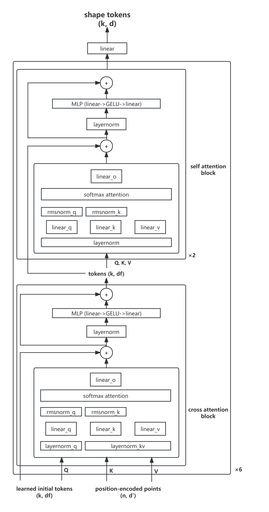
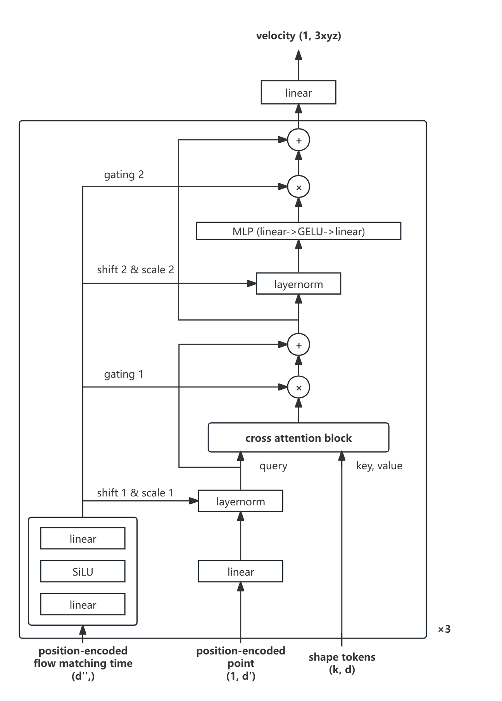

3D Shape Tokenization 复现报告¶
1. 实验背景¶
3D Shape Tokenization 是 Apple 公司在 "3D Shape Tokenization via Latent Flow Matching" 中提出的一种将 3D 形状转换为低维表示的方法，并称之为 Shape Token。
1.1 传统方法的不足¶
在传统的 3D 形状表示方法中，形状通常被表示为点云 (Point Cloud)、网格 (Mesh) 或者体素 (Voxel) 等形式。但这些表示方法存在以下不足：
- 体素 (Voxel)：虽然规则，但维度极高（存储复杂度为 \(O(n^3)\)），计算和内存开销过大，不够紧凑。
- 网格 (Mesh)：需要拓扑结构，通常要求 watertight mesh，而大规模数据集中的大部分网格并不 watertight，导致训练前需复杂预处理。
- 点云 (Point Cloud)：易获取（深度传感器直接输出），但它只是离散样本，缺乏连续性和紧凑性，难以作为机器学习模型的直接输入。
因此，很难同时满足以下三个需求：
- 连续性：表示形式应当是连续可微的，以支持梯度传播和几何计算；
- 紧凑性：在内存和计算上足够高效；
- 最少预处理：避免复杂的 mesh 修复、体素化或 SDF 提取等步骤。
1.2 本方法的改进¶
Apple 提出了一种基于流匹配 的方法，将 3D 形状 \(S\) 看作三维空间中的概率密度函数 \(p(x,y,z)\)，其概率质量集中在物体表面。通过学习一个共享潜空间，每个 Shape Token \(s\) 参数化条件分布 \(p(x|s)\)。
这种方法的优势包括：
- 连续与紧凑：仅使用 1024 个 16 维的连续向量 就能表示复杂形状。
- 预处理少：仅需表面点云，无需 watertight mesh，也无需构造占据场或 SDF。
- 可扩展性：能够直接在 Objaverse 等大规模数据集上训练，而传统方法因 watertight 要求无法做到。
此外，虽然本方法完全数据驱动，但是它仍然具有一定的几何能力，可以完成例如零样本表面法线估计等任务。
2. 数据集简介¶
2.1 ShapeNetCore¶
在本实验中，我们选取了 ShapeNetCore 作为数据集。该数据集包含约 55 个类别、50,000+ 个 3D 形状，涵盖桌子、椅子、飞机等常见物体。
我们采用 ShapeNetCore.v2.PC15k 版本，其中的每个 3D 形状均以点云形式给出，每个形状包含约 15,000 个点。按照标准划分，数据集被分为 train / val / test 三部分。
2.2 Demo 实验¶
在复现的初步阶段，为了在算力不足的情况下快速验证模型的有效性，我们从中选取了 4 个类别（共约 20,000 个形状）进行训练与测试。
选取的类别包括：
02691156(airplane)02747177(ashcan)03001627(chair)04379243(table)
这一子集既能覆盖 ShapeNet 的主要类别，又能在有限算力条件下进行模型验证。
2.3 数据集格式¶
数据集的结构如下：
ShapeNetCore.v2.PC15k/
│
├── 02691156/ # 类别: airplane
│ ├── train/
│ │ ├── xxx.npy # 点云文件
│ │ ├── yyy.npy
│ │ └── ...
│ ├── val/
│ ├── test/
│
├── 02958343/ # 类别: car
│ ├── train/
│ ├── val/
│ ├── test/
│
└── ...
每个 .npy 文件存储一个点云，形状为 [N, 3]，其中 \(N=15000\)，每一行是一个点的三维坐标 \((x,y,z)\)。在训练与评估时，我们会从中随机采样 2048 个点作为输入。
3. 实验方法¶
3.1 Shape Tokenizer¶
3.1.1 简介¶
Shape Tokenizer 相当于模型的编码器，它的目标是将 3D 形状（本实验中为点云）映射到低维的潜在表示 Shape Tokens。这些 Shape Tokens 将作为后续 Velocity Estimator 的输入，用于参数化条件分布 \(p(x|s)\)，进而描述 3D 形状的概率密度函数。
3.1.2 模型结构¶
Shape Tokenizer 的整体结构如下图：

- 输入：点云 \(X = \{x_i\}_{i=1}^n\)，其中 \(x_i \in \mathbb{R}^3\)。
- 输出：\(k\) 个 \(d\) 维 Shape Tokens，组成潜在表示 \(s \in \mathbb{R}^{k \times d}\)。
具体步骤如下：
-
位置编码 将点云坐标 \((x,y,z)\) 编码为高维向量 \(x' \in \mathbb{R}^{d'}\)，包含多频率的正弦/余弦分量。这使得模型能够感知不同尺度的几何信息。
-
点特征投影 将编码后的 \(x'\) 投影到维度 \(d_f\)，得到点特征矩阵 \(F \in \mathbb{R}^{n \times d_f}\)。
-
可学习 Token 初始化 初始化 \(k\) 个 \(d_f\) 维的 token，记作 \(T^{(0)} \in \mathbb{R}^{k \times d_f}\)，在训练中更新。
-
Cross Attention Block
- Query: 当前 tokens \(T^{(l)}\)
- Key/Value: 点特征 \(F\)
- 作用：提取全局几何信息，将点云特征聚合到 tokens。
-
Self Attention Block
- Query/Key/Value: tokens 自身
- 作用：建模 token 间依赖关系，增强上下文信息。
- 每次迭代结构为：Cross Attention → Self Attention ×2。
-
堆叠结构 将 Cross + Self Attention Block 组成的 TokenBlock 堆叠 6 次，逐步细化 Shape Token 的表示。
-
线性映射 最终通过
Linear(d_f → d)将 \(d_f\) 维 tokens 映射到 \(d\) 维，得到 \(s \in \mathbb{R}^{k \times d}\)，用于后续 Velocity Estimator。
3.2 Velocity Estimator¶
3.2.1 简介¶
Velocity Estimator 是模型的解码器，目标是利用 Shape Tokens 恢复原始 3D 形状。它的本质是学习一个速度场 \(v_\theta(x; s, t)\)，描述点 \(x\) 在时间 \(t\) 下的运动方向。
-
输入：
- Shape Tokenizer 编码的 \(k \times d\) 维 Shape Tokens \(s\)；
- 点的 Fourier 位置编码 \(x_{\text{emb}} \in \mathbb{R}^{d'}\)；
- 时间步的 Fourier 位置编码 \(t_{\text{emb}} \in \mathbb{R}^{d''}\)。
-
输出：预测的速度向量 \(\Delta x \in \mathbb{R}^3\)，用于 ODE 积分还原形状点云。
Velocity Estimator 学习如何让噪声点逐步流动到形状表面。
3.2.2 模型结构¶
Velocity Estimator 的整体结构如下图：

具体流程如下：
-
点位置编码 (FourierPositionalEncoding3D) 原始点 \(x \in \mathbb{R}^3\) 被编码为 \(x_{\text{emb}} \in \mathbb{R}^{d'}\)，提供多尺度的几何特征。
-
时间编码 (TimeEncoder) 时间步 \(t \in [0,1]\) 被编码为 \(t_{\text{emb}} \in \mathbb{R}^{d''}\)。
-
自适应归一化 (AdaLayerNorm) 使用 \(t_{\text{emb}}\) 生成 Shift 和 Scale 向量，对 \(x_{\text{emb}}\) 进行调制：
$$ \text{AdaLN}(x, t_{\text{emb}}) = \text{LayerNorm}(x) \cdot (1 + \text{Scale}(t_{\text{emb}})) + \text{Shift}(t_{\text{emb}}) $$
使得模型能感知“在不同时间步，点应该如何移动”。
-
Cross Attention 与 Shape Tokens
- Query：调制后的 \(x_{\text{emb}}\)；
- Key/Value：Shape Tokens \(s\)；
- 作用：融合形状全局特征，引导点 \(x\) 的运动。
-
Gating 门控机制 使用 \(t_{\text{emb}}\) 生成门控向量，通过 \(\sigma(\cdot)\) 抑制/放大注意力输出，再与 \(x_{\text{emb}}\) 残差连接，提升稳定性。
-
MLP 前馈网络 将 Cross Attention 替换为 MLP，重复归一化、Shift & Scale、Gating、残差的流程。
-
模块堆叠 将上述 VelocityEstimatorBlock 堆叠 3 次，逐步调整点的运动方向。
-
线性输出层 将隐藏特征投影为 \(\mathbb{R}^3\)，得到速度向量 \(v(x, s, t)\)，用于 Heun ODE 解算点的轨迹。
在实现中, \(d''\) 与 \(d\) 的维度相同。
3.3 Flow Matching¶
通过 Shape Tokenizer 和 Velocity Estimator，我们可以得到在任意时间步 \(t\) 下，点 \(x_t\) 在 Shape Token 引导下的运动方向。
Velocity Estimator 学习流匹配中的速度场 \(v_\theta(x_t; s, t)\)，其目标是将初始噪声分布 \(p_0\) 逐步变换为目标点云分布 \(p_1\)。
我们初始化一个随机噪声 \(x_0 \in \mathbb{R}^{n \times 3}\)，最终点云 \(x_1\) 的生成过程为：
其中：
- \(x_t\)：时间 \(t\) 下的点云；
- \(s\)：Shape Tokenizer 提取的 latent tokens；
- \(v_\theta\)：Velocity Estimator 预测的速度场。
3.4 Heun 方法¶
由于积分无法解析求解，我们采用 Heun 积分 进行近似计算：
-
设时间步之间的间隔为 \(h = \dfrac{1}{\text{steps}}\)；
-
对于每一个时间步 \(t\)：
- 计算 \(v_1 = v_{\theta}(x_t; s, t)\)；
- 更新临时点 \(\tilde{x} \leftarrow x_t + h \cdot v_1\)；
- 计算 \(v_2 = v_{\theta}(\tilde{x}; s, t+h)\)；
- 更新 \(x_{t+1} \leftarrow x_t + \tfrac{h}{2} \cdot (v_1 + v_2)\)；
-
重复上述过程，直到 \(t=1\)，得到最终点云 \(x_1\)。
3.5 损失函数¶
损失函数由 3 部分组成，分别是 流匹配损失（Flow Matching Loss）、一致性正则（Consistency Regularization） 和 先验正则（Prior Regularization）。
3.5.1. 流匹配损失¶
流匹配的核心思想是逼近真实的速度场 $\dot{x}_t$。在论文中，噪声与数据之间的路径由以下参数化表示：
其时间导数为：
因此，Velocity Estimator 学习的速度场 \(v_\theta(x_t; s, t)\) 需要拟合该真实导数。对应的损失为：
3.5.2. 一致性正则¶
为了让同一形状的不同子采样 \(Y, Z\) 映射到一致的 tokens，我们希望 \(q_\theta(s \mid Y)\) 与 \(p_\theta(s \mid Z)\) 尽可能接近。设其为高斯分布：
其 KL 散度为：
3.5.3. 先验正则¶
为了防止 tokens 发散，论文中引入了标准高斯先验 \(p(s) = \mathcal{N}(0, I)\)。因此添加如下约束：
3.5.4. 总损失¶
最终损失为：
其中 \(\lambda_1, \lambda_2\) 为权重系数。